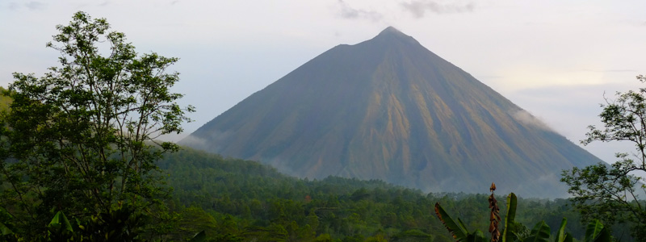

Flores

Flores' beauty is exciting. When the Portuguese got here in the 15th century they called the island Cabo das Flores (meaning Cape of Flowers) due to its luscious green landscape.
Like most of Indonesia the soil is volcanic so very fertile. The whole island is like the biggest botanical garden, it never changes or diminishes the intensity of its millions of shades of green, aided by frequent rain that is never bothersome but only adds to the magic of the place. The clouds seem to be constantly hugging the volcanoes, leaving the blue of the sky to mix into the other colours of the landscape.
Palm, banana and macadamia trees create several levels of tropical canopy and only jagged volcanos extend higher while lower down, white water rushes through bouldered rivers in steep sun kissed valleys where big colourful butterflies flirt with each other.
Everyone dries cacao and coffee outside their houses and the daily rain promotes a choreographed dance, involving pilling up the grains when the black clouds gather, covering them with tarps and vice versa when the sun comes back out twenty minutes later. In Flores we saw the best umbrellas, banana leaves, which seem to be the perfect size and rigidity as well as being as waterproof as goretex, unfortunately not so practical to pack into our bags.
We stayed only a week in Flores. Not on purpose, but things just seemed to slot into others without our interference, so we went where the wind blew us.
The flowery journey started where another ended, as we disembarked from the pelni ship which had got us from Makassar in Sulawesi to Maumere in Flores. As we walked through the harbour we were greeted by what felt like a million people who proceeded to hassle and chase and touch us. But there was one tout who walked with us for a while without asking anything, and when the big crowd had been left behind he interjected in the conversation correcting another tout who was hassling us, explaining that he should say "Excuse me mister" when speaking politely to tourists. We carried on dismissing them, but it was nearly midnight and we had no clue where to go. In the end there was only that one tout left and we bargained a price for a car to a hotel, which he accepted. His name was Dus.
Three days later we found ourselves still travelling with Dus. We don't tend to get private cars, preferring public transport for all the obvious reasons, even though going private might be less hassle and more comfortable... This time was different. The next morning Dus turned up at our hotel trying to take us to our next destination, we said we would get the bus thanks, it was too expensive for us anyway. He left and half hour later returned, having found the two Romanian girls which we had met on the ship the day before. An hour later the five of us set off towards Moni to climb Gunung Kelimutu.
Through the next couple of days we got to see Flores. And we got to know Dus. He was just a really nice guy at first with excellent english who played the same MP3s over and over again to the point we knew all the songs by heart. Bit by bit we found out more, he wasn't married because he needed to get enough money to buy ten horses, pigs, chicken and rice to give his bride's family, and showed us his chosen one's picture which he carried in his wallet. How much can you find out about a person in two days? His name was in the local paper as the candidate for one of the parties in the local elections and he taught us that the Bahasa Indonesia word for prostitute is Kupu Kupu Malam, meaning Butterfly of the Night.
On the way to Moni we stopped for a rainy beach lunch and had our first taste of dog. Katalina, one of the girls we travelled with, ordered some, so we had to try. It wasn't horrible, nor delicious, a cross between the taste of pork and the texture of beef. Just mentally wrong of course, for us, for no locals would ever be haunted by cute puppy eyes as they ate their dinner. At the same beach warung I had the most beautifully cooked fish of the last three months, charcoal grilled to perfection, moist and seasoned with lime and spices. One would think that Indonesia had this fish grilling down to an art, with the abundance of fish in their waters, a nation of islands, but amazingly they just can't cook fish. Fact.
The next stop on the itinerary was blue pebble beach, sounds pretty unexciting but turns out they were really blue and pretty so we were glad we stopped. There were piles and piles of the blue stones everywhere on the side of the roads, different piles for different shades of blue, ready to be sold to the building industry for encrusting in walkways, walls and bathroom floors.
Moni/Kelimutu
There wasn't much going on in Moni, a teenty tiny town and gateway to Flores' star tourist attraction, the volcano Kelimutu. By the time we arrived everyone was getting ready for bed as the climb started at 5am to reach the summit in time for sunrise.
Next morning up we went, but our guide was slack and we watched a beautiful sunrise while still walking up. The volcano is famous for its three lakes, each a different colour and when three weeks before one of them turned white the government closed the national park and no hikes were allowed. It was still officially closed when we visited, but local guides had unofficially opened it as there was no volcanic activity and its closure was impacting their livelihoods.
At the top we were blessed with amazing views of the three lakes in the warm sunrise hues - one black, one blue and one white. There was no apparent danger or gurgling lava pouring down. When the clouds suddenly rose from the lake it was if they had all been queuing, invisible, waiting for the time to enter the crater and obstruct our special view. On the way down we dreamed of a big breakfast and a sleep. An hour later we where somehow driving towards Bajawa, with Dus, again.
Bajawa and surrounds
For no reason other than the fact that some other people we had met a couple of weeks earlier in Sulawesi had gotten into a transport related misunderstanding, we were back on the road. We could let them pay loads for a car for two or share it between four. So we did the latter, as we wanted to go the same way. Had breakfast and packed in a rush and got to Bajawa eight hours later where we said goodbye to Dus. We didn't believe we wouldn't see him again but really, that was it, no more cheesy music, no more impromptu changes of plan.
The following day we hired a motorbike and cruised around the area. Visited a beautiful traditional village in the morning which used to be traditional but is now more of a thing for tourists to see. We heard that when the tour groups descend on it, it isn't a pretty sight but we were lucky and shared its soul with no one but the villagers that day. Right there on the base of a volcano's ridges, about twenty bamboo traditional houses surrounded a huge courtyard, where megaliths smeared with blood stood and coffee grains dried in the sun. In the afternoon we forgot it was a Sunday and headed for the local hot springs to find it teeming with locals who flocked there for their weekly wash and teenage couples hung out in the hot pools. We were watched and gossiped about as we played in the boiling waterfall and left as the sun was setting to ride the 30 km back to Bajawa. In the darkness of nightfall, a steep windy road with thick fog and a then inexperienced motorbike driver tensed up all the muscles the hot spring had managed to relax.
Riung and the 17 Islands National Park
On the north coast of Flores is the town of Riung, and off that coast is the 17 Islands National Park. Actually, there are 21 islands, but Jakarta decided to call it 17 because Indonesia's Independence Day falls on the 17th. Go figure. I can imagine the thought process that went into choosing the name, "Here we have 21 islands what shall we call it?" - "I know. 17 Islands National Park, brilliant idea!"
Anyhow - 17 Islands National Park. We took a bouncy bus with a super-loud boom boom stereo and surfing goats on the roof and arrived at the end of the afternoon. The town itself was spooky, seemed to be widely spread and very green and not many shops or restaurants, only a harbour and a mosque. To add to the spookiness our guesthouse owner explained he would stay awake all night in vigil looking after our bungalows as there had been robberies recently in other guesthouses in the village. It was hard to sleep that night, any animal in the jungle sounded exactly like a bad guy coming to rob us.
The next day we went on a boat trip around the islands and had a sweet day at sea. It started with Batman. Lots of them! Huge bats, flying foxes they call them, flew in circles in their search for a suitable branch to hang their wings and sleep for the day. They were big, with wings spanning a meter.
While our host caught up on sleep we snorkelled around a few spots but the highlight was the beaches: real deserted islands with perfect white fine soft sand for lying on and turquoise sea for bathing in. We could only take one more night in scary town and shot off back to Bajawa where we hopped on a shared car with other Indonesians all going to Ruteng where there wasn't much to see, but we wanted to break the journey to Labuanbajo and decided it would be interesting to spend the night at a convent with nuns and stuff where to our surprise the rooms were actually apartments with two bathrooms and no kitchen.
Seven days after arriving in Flores we got to the other end of it, Labuanbajo, gateway to Komodo dragons and sea adventures but decided we would unpack our bags and see the area for a couple of days before the next leg. That didn't happen but that's a story for another post.
Comments